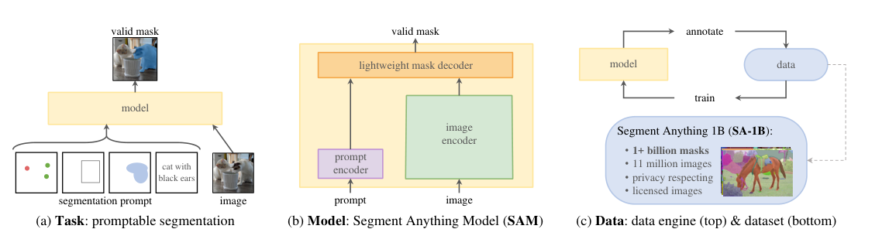
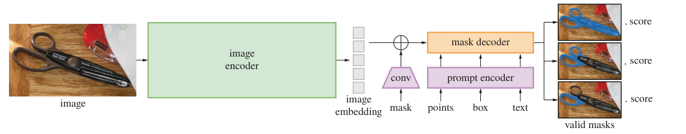
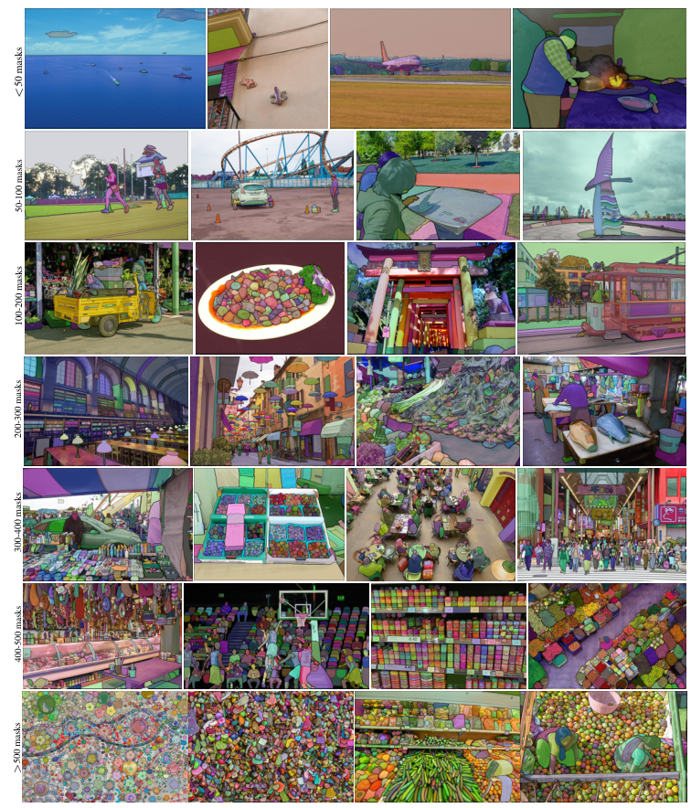
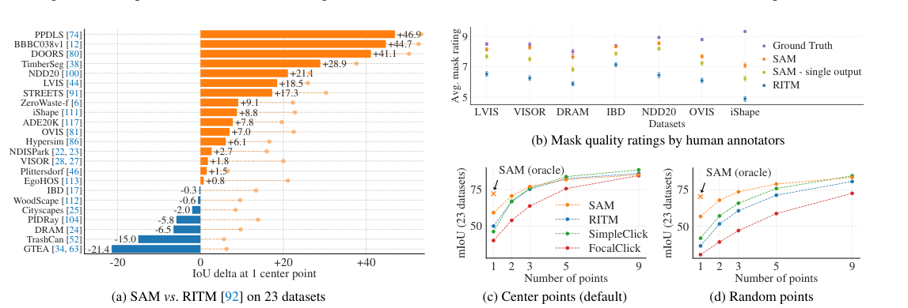

Background & Motivation
Segment Anything(SA)專案想把「影像分割」帶進基礎模型(foundation model)時代,靠三個互相扣連的元件:一個新任務(可提示分割 promptable segmentation)、一個能即時互動的模型 SAM、以及一個用「資料引擎」自動標註出的巨型資料集 SA-1B(1,100 萬影像、11 億 masks)。訓練完的 SAM 能靠 prompt engineering 零樣本(zero-shot)遷移到邊緣偵測、物件提議、實例分割等它沒被訓練過的任務。
The Segment Anything (SA) project aims to bring image segmentation into the era of foundation models via three interlocking pieces: a new task (promptable segmentation), a real-time interactive model, SAM, and a giant dataset, SA-1B (11M images, 1.1B masks), auto-labeled by a data engine. Once trained, SAM transfers zero-shot via prompt engineering to tasks it was never trained on—edge detection, object proposals, instance segmentation, and more.

如果只有 30 秒In 30 seconds
- 問題 — NLP 的基礎模型(GPT/CLIP)靠 web-scale 資料 + prompt 達成強泛化,但影像分割沒有 web-scale 的 mask 資料,而且既有模型多是「一個模型解一個固定任務」,難以零樣本遷移。
- Problem — NLP foundation models (GPT/CLIP) generalize via web-scale data + prompting, but segmentation has no web-scale mask data, and existing models mostly solve a single fixed task, resisting zero-shot transfer.
- 任務 — 定義 promptable segmentation:對任意 prompt 都要輸出一個「合理的 valid mask」,即使 prompt 有歧義(點在襯衫上 → 襯衫或人都算對)。這個任務同時當預訓練目標與下游遷移的介面。
- Task — Define promptable segmentation: for any prompt, return a reasonable valid mask, even when ambiguous (a point on a shirt → shirt or person both count). This serves as both the pre-training objective and the downstream interface.
- 模型 + 資料 — SAM = MAE 預訓練 ViT-H image encoder + 輕量 prompt/mask decoder,給定影像 embedding 後對每個 prompt 僅需 ~50ms。用「資料引擎」由人工 → 半自動 → 全自動三階段滾出 SA-1B:11M 影像、1.1B masks(比既有最大資料集多 400 倍)。
- Model + Data — SAM = an MAE-pretrained ViT-H image encoder + a lightweight prompt/mask decoder; given an image embedding, each prompt costs only ~50ms. A three-stage data engine (manual → semi-automatic → fully automatic) rolls out SA-1B: 11M images, 1.1B masks (400× more than any prior dataset).
- 結果 — 單一前景點分割在 23 個資料集上勝過最強互動式分割器 RITM(16/23,oracle 下 23/23);零樣本遷移到邊緣偵測、物件提議、實例分割、文字轉 mask 都有可觀表現,常逼近甚至(人評下)超越全監督方法。
- Results — Single-point segmentation beats the strongest interactive segmenter RITM on 16/23 datasets (23/23 under an oracle); zero-shot transfer to edge detection, object proposals, instance segmentation, and text-to-mask is strong—often nearing or (by human ratings) exceeding fully supervised methods.
領域脈絡Field context
在 NLP,大型語言模型(GPT-3)證明:在 web-scale 語料上做 next-token 預訓練,再用 prompt engineering 就能零/少樣本解新任務。視覺上,CLIP/ALIGN 用對比學習對齊文字與影像,讓工程化的文字 prompt 能零樣本辨識新概念。但這些主要是「編碼器 / 對齊」,視覺還有大量問題(如密集分割)缺乏充足訓練資料。
In NLP, large language models (GPT-3) showed that next-token pre-training on web-scale corpora plus prompt engineering solves new tasks zero/few-shot. In vision, CLIP/ALIGN align text and images by contrastive learning, letting engineered text prompts recognize novel concepts zero-shot. But these are mostly encoders/alignment; many vision problems (e.g., dense segmentation) still lack abundant training data.
分割本身是個龐雜領域:互動式分割、邊緣偵測、物件提議、前景分割、語義/實例/全景分割……過去多為「單一模型、固定任務」。SAM 想做的不是再多一個分割器,而是一個能被組合(composed)進更大系統、透過 prompt 適應多種任務的分割基礎模型。
Segmentation is itself a sprawling field: interactive segmentation, edge detection, object proposals, foreground segmentation, semantic/instance/panoptic segmentation… traditionally "one model, one fixed task." SAM's goal is not another segmenter but a segmentation foundation model that can be composed into larger systems and adapted to many tasks via prompting.
這篇的精神是把 GPT/CLIP 的「任務可提示 + 資料規模化」配方移植到分割。最大的創新其實不在模型架構(設計刻意簡單),而在「任務 × 資料引擎」:先定義一個能當預訓練目標又能當下游介面的任務,再用「模型參與標註」的飛輪把資料規模從沒有做到 11 億。模型是手段,任務與資料才是主角。
The spirit is to port the GPT/CLIP recipe (promptable tasks + data scaling) to segmentation. The key novelty is not the architecture (deliberately simple) but the "task × data engine": first define a task that doubles as pre-training objective and downstream interface, then use a model-in-the-loop flywheel to scale data from nothing to 1.1B masks. The model is the means; the task and data are the stars.
核心洞見 · KEY INSIGHTSKEY INSIGHTS
這篇值得帶走的不只是「一個好用的分割工具」,而是底下這幾個觀念:
What's worth taking away is not just "a handy segmentation tool" but these ideas:
- 任務即介面。 「輸出 valid mask」這個可提示任務,同時是預訓練目標,也是下游遷移的通用介面——把新任務轉譯成「餵什麼 prompt」,而非重新訓練。
- The task is the interface. The promptable "output a valid mask" objective is both the pre-training target and a universal downstream interface—new tasks become "what prompt to feed," not retraining.
- 資料引擎是真正的護城河。 沒有 web-scale mask,就用「模型幫忙標、標好再訓模型」的飛輪:99.1% 的 masks 是全自動產生的,規模達 1.1B。資料規模化的方法本身,就是貢獻。
- The data engine is the real moat. With no web-scale masks, use a flywheel—model assists labeling, labels train the model: 99.1% of masks are generated fully automatically, reaching 1.1B. The data-scaling method is itself the contribution.
- 刻意處理歧義。 一個點可能指襯衫也可能指人;SAM 一次輸出 3 個 mask(整體 / 部件 / 子部件)並各給信心分,而不是硬平均成一團糊。這對「valid mask」定義是關鍵。
- Ambiguity is handled by design. A point may mean the shirt or the person; SAM outputs 3 masks (whole / part / subpart) each with a confidence score, instead of averaging into mush. This is central to the "valid mask" definition.
- 攤提(amortize)成本的架構。 把「重」放進只跑一次的 image encoder,把「輕」留給每個 prompt(~50ms)。同一張影像的 embedding 可被無數 prompt 重用,才可能瀏覽器內即時互動。
- An amortized architecture. Put the "heavy" in a once-per-image encoder and keep the "light" per prompt (~50ms). One image embedding is reused across countless prompts, enabling real-time interaction in a browser.
- 分割 ≠ 辨識。 SAM 輸出的是不帶語義標籤的 mask——它「切得出任何東西,卻叫不出名字」。要做語義/實例任務仍需外接偵測器或 CLIP。這既是設計選擇,也是它的邊界。
- Segmentation ≠ recognition. SAM outputs label-free masks—it can "cut out anything but names nothing." Semantic/instance tasks still need an external detector or CLIP. This is both a design choice and its boundary.
Problem Diagnosis
現況 vs 痛點Status quo vs pain points
| 現有做法Existing approach | 它的痛點Its pain point |
|---|---|
| 互動式分割Interactive segmentation (RITM, FocalClick) | 目標是「多點幾下後最終切好一個 mask」,為人類使用者設計、綁定 human-in-loop,也不處理歧義、無法零樣本當別的任務用。Aims to eventually cut one mask after enough clicks; designed for human users, tied to a human-in-loop, ignores ambiguity, and can't be repurposed zero-shot as other tasks. |
| 語義 / 實例 / 全景分割Semantic / instance / panoptic (Mask R-CNN, Mask2Former) | 固定標籤集、固定任務;訓練與測試任務相同,換新分佈或新任務就要重新標註、重新訓練。Fixed label set, fixed task; train and test tasks are identical, so a new distribution or task means re-annotating and retraining. |
| 視覺基礎模型Vision foundation models (CLIP, ALIGN) | 對齊文字與影像很強,但不輸出密集 mask;而且分割缺乏 CLIP 那種 web-scale(影像-文字)的天然監督。Great at text-image alignment but don't output dense masks; and segmentation lacks CLIP-style web-scale (image-text) natural supervision. |
論文把問題拆成三個彼此糾纏的子問題:(1) 什麼任務能帶來零樣本泛化?(2) 對應的模型架構是什麼?(3) 什麼資料能餵養這個任務與模型?
The paper factors the problem into three entangled sub-questions: (1) What task enables zero-shot generalization? (2) What is the corresponding model architecture? (3) What data can power this task and model?
Gap 表 — 誰缺什麼,SAM 怎麼補Gap table — who lacks what, and how SAM fills it
| 缺口Gap | 限制Limitation | SAM 如何補上How SAM fills it |
|---|---|---|
| 缺「可遷移的任務」No transferable task | 既有分割任務彼此獨立、無共用預訓練目標。Segmentation tasks are siloed, no shared pre-training objective. | promptable segmentation:一個任務兼做預訓練與下游介面。Promptable segmentation: one task as both pre-training and downstream interface. |
| 缺「即時互動」No real-time interaction | 重模型難以在互動場景即時回應 prompt。Heavy models can't respond to prompts in real time. | 攤提架構:image encoder 跑一次,prompt/decoder ~50ms。Amortized design: encoder runs once, prompt/decoder ~50ms. |
| 缺「大規模 mask 資料」No large-scale mask data | 網路上 mask 稀少;最大資料集僅百萬級 masks。Masks are scarce online; the largest datasets have only millions of masks. | 資料引擎 → SA-1B 1.1B masks(400× 於既有)。Data engine → SA-1B, 1.1B masks (400× prior). |
| 缺「歧義處理」No ambiguity handling | 單一輸出會把多個合理解答平均成糊。A single output averages multiple valid answers into mush. | 一次輸出 3 個 mask + IoU 信心分(整體/部件/子部件)。Outputs 3 masks + IoU confidence (whole/part/subpart). |
注意這裡的痛點不是「精度不夠」,而是「不可遷移、不可規模化、不可即時」——都是系統與資料層次的問題,而非某個 loss 或 backbone。這解釋了為何論文的重心放在「任務定義 + 資料引擎」,模型反而刻意保持簡單。這是一種「用工程與資料換泛化」的賭注。
Note the pain points aren't "not accurate enough" but "not transferable, not scalable, not real-time"—all systems-and-data problems, not a loss or backbone. That's why the paper centers on "task definition + data engine" and keeps the model deliberately simple. It's a bet on trading engineering and data for generalization.
Core Method
任務:可提示分割與其預訓練Task: promptable segmentation & its pre-training
給定影像 \(I\) 與任意 prompt \(p\)(前景/背景點、框、粗略 mask、或文字),模型 \(f\) 要輸出一個 valid mask:
Given an image \(I\) and any prompt \(p\) (fg/bg points, a box, a coarse mask, or text), the model \(f\) must output a valid mask:
「valid」的定義很關鍵:即使 \(p\) 有歧義(可指多個物件),輸出至少要是其中一個物件的合理 mask。預訓練時模擬互動:對每個訓練 mask 隨機採樣一連串 prompt(共 11 輪),把預測與 ground truth 比對——這自然地成為一個強的預訓練目標,也讓 SAM 能無縫嵌入資料引擎。
The "valid" clause is key: even if \(p\) is ambiguous (could refer to several objects), the output must be a reasonable mask for at least one of them. Pre-training simulates interaction: for each training mask, sample a sequence of prompts (11 rounds) and compare predictions to ground truth—a strong pre-training objective that also lets SAM slot into the data engine.
下游遷移完全靠 prompt engineering:例如有一個貓的偵測框,就把框當 prompt 餵給 SAM,即得貓的實例 mask。任務層次的泛化,而非只是分佈泛化。
Downstream transfer is pure prompt engineering: e.g., feed a cat detector's box as a prompt to get the cat's instance mask. Task-level generalization, not merely distribution shift.
模型 SAM:三個元件The SAM model: three components

- Image encoder — MAE 預訓練的 ViT-H/16(14×14 windowed + 4 個 global attention blocks),輸入 \(1024\times1024\),輸出 \(64\times64\times256\) 的 embedding(16× 下採樣)。只跑一次,故可放心堆 FLOPs。
- Image encoder — an MAE-pretrained ViT-H/16 (14×14 windowed + 4 global attention blocks), input \(1024\times1024\), output a \(64\times64\times256\) embedding (16× downscaled). Runs once, so FLOPs are affordable.
- Prompt encoder — 稀疏 prompt 映射到 256 維:點 = 位置編碼 + 前景/背景 learned embedding;框 = 兩角 embedding;文字 = CLIP text encoder。稠密 prompt(mask)以卷積下採樣後與 image embedding 逐元素相加。
- Prompt encoder — sparse prompts map to 256-dim: a point = positional encoding + fg/bg learned embedding; a box = two-corner embeddings; text = the CLIP text encoder. Dense prompts (masks) are conv-downsampled and added element-wise to the image embedding.
- Mask decoder — 輕量,改造自 Transformer decoder:用 雙向 cross-attention(prompt↔image)更新所有 embedding,跑兩個 block,再上採樣 + MLP 產生一個動態線性分類器,對每個像素算前景機率。給定 embedding 後在 CPU/瀏覽器 ~50ms。
- Mask decoder — lightweight, a modified Transformer decoder: two-way cross-attention (prompt↔image) updates all embeddings over two blocks, then upsampling + an MLP form a dynamic linear classifier giving a per-pixel foreground probability. ~50ms on CPU/browser given the embedding.
歧義、損失與訓練Ambiguity, losses & training
面對歧義 prompt,SAM 一次預測 3 個 mask \(\{M_1,M_2,M_3\}\)(對應整體/部件/子部件),訓練時只對損失最小的那個反向傳播:
For ambiguous prompts, SAM predicts 3 masks \(\{M_1,M_2,M_3\}\) (whole/part/subpart) and backprops only through the minimum-loss one:
同時一個 IoU 預測頭以 MSE 學習估計每個 mask 的品質(當信心分用來排序):
An IoU-prediction head is trained with MSE to estimate each mask's quality (used as a confidence score for ranking):
focal:dice = 20:1。訓練:AdamW,ViT-H,batch 256,約 90k iters(≈2 個 SA-1B epoch)。[導讀補充] 上面兩式的符號組合是依原文文字描述(focal+dice 20:1、min-over-masks、IoU 用 MSE)整理成的形式化寫法,原論文正文未列出方程式。
focal:dice = 20:1. Training: AdamW, ViT-H, batch 256, ~90k iters (≈2 SA-1B epochs). [guide note] The two equations above are a formalization of the paper's prose (focal+dice 20:1, min-over-masks, IoU via MSE); the main text does not print equations.
資料引擎:三階段飛輪Data engine: a three-stage flywheel
核心是「模型幫忙標、標好再訓模型」的正回饋:模型越好、標得越快越自動,最終 99.1% 的 masks 全自動生成。穩定性判準:把機率圖在 \(0.5\pm\delta\) 閾值化仍得到相似 mask。
The core is a positive feedback loop—the model assists labeling; labels train the model: the better the model, the faster/more automatic the labeling, ending with 99.1% of masks generated fully automatically. Stability test: thresholding the probability map at \(0.5\pm\delta\) still yields a similar mask.

符號白話對照Symbols in plain words
| \(p\) | prompt:前景/背景點、框、粗 mask、或文字——「指出要切什麼」。Prompt: fg/bg points, a box, a coarse mask, or text—"what to segment." |
| \(M,\;M^\ast\) | 預測 mask 與 ground-truth mask。Predicted mask and ground-truth mask. |
| \(\{M_1,M_2,M_3\}\) | 對歧義 prompt 的三個候選(整體/部件/子部件)。Three candidates for an ambiguous prompt (whole/part/subpart). |
| \(\widehat{\text{IoU}}\) | 模型自估的 mask 品質分,用來排序、挑最有信心的一個。The model's self-estimated mask-quality score, used to rank and pick the most confident. |
| \(\mathcal{L}_{\text{focal}},\mathcal{L}_{\text{dice}}\) | mask 監督損失,以 20:1 線性組合。Mask-supervision losses, combined linearly at 20:1. |
Experimental Evidence
核心:單點分割(23 個資料集,零樣本)Core: single-point segmentation (23 datasets, zero-shot)

SAM 在 16/23 個資料集勝過最強互動式分割器 RITM,最多 ~47 IoU;若用 oracle 解歧義,在全部 23 個都勝。人評分數落在 7–9(物件可辨識、錯誤小而少)。
SAM beats the strongest interactive segmenter RITM on 16/23 datasets, by up to ~47 IoU; with an oracle resolving ambiguity, it wins on all 23. Human ratings land at 7–9 (object identifiable, errors small and rare).
零樣本遷移到四個新任務Zero-shot transfer to four new tasks
| 任務 / 資料集Task / dataset | SAM | 對照Baseline | 解讀Read |
|---|---|---|---|
| 邊緣偵測 / BSDS500 (ODS↑)Edge detection / BSDS500 (ODS↑) | .768 | Canny .600 HED .788 |
從沒學過邊緣,卻遠勝經典法、逼近 HED;傾向多預測邊(高 recall)。Never trained on edges, yet far beats classics, nears HED; tends to predict more edges (high recall). |
| 物件提議 / LVIS (AR@1000↑)Object proposals / LVIS (AR@1000↑) | 59.3 | ViTDet-H 63.0 | 整體略低,但在中/大物件、稀有/常見類別勝過在 LVIS 上訓練的 ViTDet。Slightly lower overall, but beats LVIS-trained ViTDet on medium/large and rare/common. |
| 實例分割 / COCO (mask AP↑)Instance seg / COCO (mask AP↑) | 46.5 | ViTDet-H 51.0 | AP 落後全監督 ViTDet,但人評 SAM 8.1 > ViTDet 7.9(邊界更利落)。AP trails supervised ViTDet, but humans rate SAM 8.1 > ViTDet 7.9 (crisper boundaries). |
| 文字轉 mask / 概念驗證Text-to-mask / proof-of-concept | 可切「a wheel」「beaver tooth grille」Segments "a wheel", "beaver tooth grille" | 用 CLIP image-embedding 訓、text-embedding 推;尚不穩健,失敗時補一個點常能救。Train with CLIP image-embeddings, infer with text; not yet robust—a point often fixes failures. | |
四個任務都只靠 prompt engineering、沒為它們訓練過。故事是:一個模型當「分割元件」插進不同系統,就能跨越低/中/高階視覺任務。
All four tasks use only prompt engineering, none trained for. The story: one model, dropped in as a "segmentation component," spans low/mid/high-level vision tasks.
消融:資料與規模的貢獻Ablations: what data and scale buy
| 消融項Ablation | 發現Finding |
|---|---|
| 資料引擎階段Data-engine stages | 每個階段都提升 mIoU;只用全自動 masks 只比用全部低 ~0.5 mIoU → 預設只用全自動,簡化訓練。Each stage improves mIoU; automatic-only is just ~0.5 mIoU below using all data → default to automatic-only for simplicity. |
| 資料量Data volume | 0.1M 影像明顯掉;1M(~10%)已逼近全量 11M(仍含 ~100M masks)。0.1M images drops clearly; 1M (~10%) already nears the full 11M (still ~100M masks). |
| Image encoder 規模Image-encoder scale | ViT-B(91M)→ViT-L(308M)→ViT-H(636M):ViT-H 對 ViT-L 增益已很邊際,呈飽和。ViT-B(91M)→ViT-L(308M)→ViT-H(636M): ViT-H over ViT-L is marginal—saturating. |
SA-1B 資料集本身(也是核心產出)SA-1B itself (a core deliverable)
| 面向Aspect | SA-1B | 對照vs prior |
|---|---|---|
| 影像 / masksImages / masks | 11M / 1.1B | masks 為既有最大者 400×;影像 11× 於 Open Images400× the masks of the largest prior set; 11× the images of Open Images |
| 每張 mask 數Masks per image | ~100 | 36× 於 Open Images36× Open Images |
| mask 品質Mask quality | 94% pairs >90% IoU | 人類互評一致性僅 85–91% IoUinter-annotator consistency 85–91% IoU |
RAI 分析:SA-1B 地理/收入較既有資料集更均衡(所有區域皆 ≥28M masks),SAM 在性別/年齡/膚色分組上表現相近(信賴區間多重疊)。
RAI analysis: SA-1B is more geographically/economically balanced (every region ≥28M masks), and SAM performs similarly across gender/age/skin-tone groups (mostly overlapping CIs).
Critical Reading
可被質疑的點Contestable points
- 資料的循環性(self-training bias):SA-1B 有 99.1% 的 mask 是 SAM 自己產的,再拿回去訓 SAM。而「94% masks >90% IoU」的品質驗證,又是讓標註員用 SAM 的筆刷工具去修——修正過程本身帶著 SAM 的先驗。資料集會系統性地繼承 SAM 的盲點(漏細結構、幻覺小碎塊),獨立性存疑。
- Data circularity (self-training bias): 99.1% of SA-1B masks are produced by SAM itself, then fed back to train SAM. And the "94% masks >90% IoU" quality check has annotators correct masks using SAM's own brush tool—correction carrying SAM's prior. The dataset systematically inherits SAM's blind spots (missing fine structure, hallucinated fragments); its independence is questionable.
- 「zero-shot」名實之爭:分割「切東西」的能力被 1.1B masks 重度監督過,涵蓋極廣的視覺分佈。所謂 zero-shot 主要是任務遷移,而非 CLIP 那種概念/分佈的新穎性。23 個評測集相對 SA-1B 到底有多「未見」,論文未量化。
- "Zero-shot" naming dispute: the "cut things out" skill is heavily supervised on 1.1B masks spanning a huge visual distribution. The zero-shot here is mainly task transfer, not CLIP-style concept/distribution novelty. How "unseen" the 23 eval sets are relative to SA-1B is never quantified.
- 分割不含語義:SAM 只給class-agnostic 的 mask,沒有標籤。要做語義/全景分割「不知如何設計 prompt」(作者自承)。嚴格說,SAM 更像一個超強的「類別無關提議產生器 + 介面」,把「辨識」外包給偵測器/CLIP,基礎模型的完整性打了折。
- Segmentation without semantics: SAM emits class-agnostic masks, no labels. For semantic/panoptic segmentation it's "unclear how to design prompts" (authors' own words). Strictly, SAM is closer to a superb class-agnostic proposal generator + interface, outsourcing recognition to a detector/CLIP—discounting its completeness as a foundation model.
- 不是真的即時、算力門檻高:即時只涵蓋輕量 decoder;ViT-H image encoder 很重,單張單 prompt 享受不到攤提。SA-1B 全自動階段對全部 11M 高解析影像跑 SAM,算力與資料授權成本極高,學術端難複現。
- Not truly real-time; steep compute: real-time covers only the light decoder; the ViT-H encoder is heavy, so single-prompt/single-image gets no amortization. The fully automatic stage runs SAM over all 11M high-res images—compute and licensing costs are high, hard for academia to reproduce.
- 作者坦承的限制:漏細結構、偶爾幻覺小碎塊、邊界不如「zoom-in」法利落;多點時專用互動法會贏過 SAM;文字轉 mask 僅屬探索。
- Author-acknowledged limits: misses fine structure, occasionally hallucinates small disconnected components, boundaries less crisp than "zoom-in" methods; dedicated interactive methods beat SAM with many points; text-to-mask is exploratory.
- 指標選擇偏向 SAM:實例分割 AP 明顯落後,論文轉而強調「人評更好」並歸因於 GT 有偏。這雖有道理,卻也把評估標準換成對自己有利的一把尺,同時削弱了整個 benchmark 的可信度。
- Metric choice favors SAM: instance-seg AP clearly trails, so the paper pivots to "better human ratings," blaming biased GT. Reasonable—but it also swaps in a yardstick favorable to itself, while undercutting the credibility of the benchmark it relies on.
給讀書會 / 審稿的犀利問題Sharp questions for a reading group / review
- 資料的循環性:若 99% 的訓練 mask 出自 SAM 自己,SA-1B 究竟提供了多少「新資訊」,而非放大模型既有先驗?只用 stage-1 的 4.3M 純人工 mask 能到哪?
- Data circularity: if 99% of training masks come from SAM itself, how much genuinely new information does SA-1B add versus amplifying the model's priors? How far would 4.3M purely-human stage-1 masks get you?
- zero-shot 名實:當預訓練分佈(1.1B 多樣 masks)幾乎涵蓋下游影像統計時,「zero-shot」標籤是否公平?該如何量化 23 個評測集相對 SA-1B 的新穎度?
- Zero-shot label: when the pre-training distribution (1.1B diverse masks) likely covers downstream image statistics, is "zero-shot" a fair label? How should we quantify the novelty of the 23 eval sets relative to SA-1B?
- 指標之爭:人評說 SAM 的 mask 比「用 GT 訓練的 ViTDet」還好。這代表 benchmark 壞了,還是 mask AP 量錯了品質?這個領域該相信哪一個?
- The metric war: humans say SAM's masks beat GT-trained ViTDet. Does that mean the benchmark is broken, or that mask AP mis-measures quality? Which should the field trust?
- 沒有語義還算基礎模型嗎? 一個「切得出萬物、卻叫不出名字」、必須外接辨識器的模型,是分割的 foundation model,還是一個極佳的介面 + 提議器?
- Is it a foundation model without semantics? A model that "cuts out anything but names nothing" and needs an external recognizer—is it a segmentation foundation model, or a superb interface + proposal generator?
- 攤提假設的現實性:重 encoder 的設計對邊緣/即時部署限制多大?「同影像多 prompt」的攤提前提,在真實應用中有多常成立?
- Reality of the amortization assumption: how much does the heavy encoder limit edge/real-time deployment? How often does the "many prompts per image" premise actually hold in practice?
Takeaways
對你研究的啟發Implications for your research
- 「任務即介面」的設計法可遷移:先找一個既能當預訓練目標、又能靠 prompt 涵蓋眾多下游的「元任務」,勝過為每個任務各訓一個模型。做新領域基礎模型時,值得先問「我的 promptable 任務是什麼?」
- The "task-as-interface" design pattern transfers: find a meta-task that is both a pre-training objective and, via prompts, a cover for many downstream tasks—better than one model per task. For a new-domain foundation model, first ask "what is my promptable task?"
- 沒有資料就造飛輪:當 web-scale 標註不存在,「模型參與標註 → 標註訓練模型」的 data engine 是可行且強大的路。關鍵是用階段性自動化把人力導向最難的樣本。
- No data? Build a flywheel: when web-scale annotation doesn't exist, a "model-in-the-loop" data engine is viable and powerful. The key is staged automation steering human effort to the hardest cases.
- 把模型當「元件」而非「終點」:SAM 的價值大半來自被組合(接偵測器做實例、接 CLIP 做文字、接 gaze 做互動)。設計模型時預留乾淨、可組合的介面,會放大它的長期影響。
- Treat the model as a component, not an endpoint: much of SAM's value comes from composition (a detector for instances, CLIP for text, gaze for interaction). Designing a clean, composable interface amplifies long-term impact.
值得引用的點What's worth citing
| 當你要主張…When you claim… | 就引這篇Cite this for |
|---|---|
| 「可提示 / 可組合的視覺基礎模型」"promptable / composable vision foundation model" | SAM 是代表性範例(task+model+data 三位一體)。SAM as the flagship example (task+model+data trinity). |
| 「model-in-the-loop 資料引擎可規模化標註」"model-in-the-loop data engines scale annotation" | 引 SA-1B 三階段(1.1B masks、99.1% 全自動)。Cite SA-1B's three stages (1.1B masks, 99.1% automatic). |
| 「class-agnostic 分割 / 通用 mask 先驗」"class-agnostic segmentation / general mask prior" | 引 SAM 作為下游任務的分割元件或標註器。Cite SAM as a segmentation component / labeler for downstream tasks. |
Segment Anything 用「可提示任務 × 資料引擎 × 攤提式模型」把影像分割推向基礎模型時代:一個 class-agnostic 的 SAM + 11 億 masks 的 SA-1B,能靠 prompt 零樣本遷移到眾多任務。它真正的創新在「任務定義與資料規模化」而非架構;而它的邊界(無語義、資料循環、非即時)也同樣清楚。
Segment Anything pushes image segmentation into the foundation-model era via "a promptable task × a data engine × an amortized model": a class-agnostic SAM + SA-1B's 1.1B masks that transfer zero-shot to many tasks via prompting. Its real novelty is task definition and data scaling, not architecture—and its boundaries (no semantics, data circularity, not real-time) are just as clear.